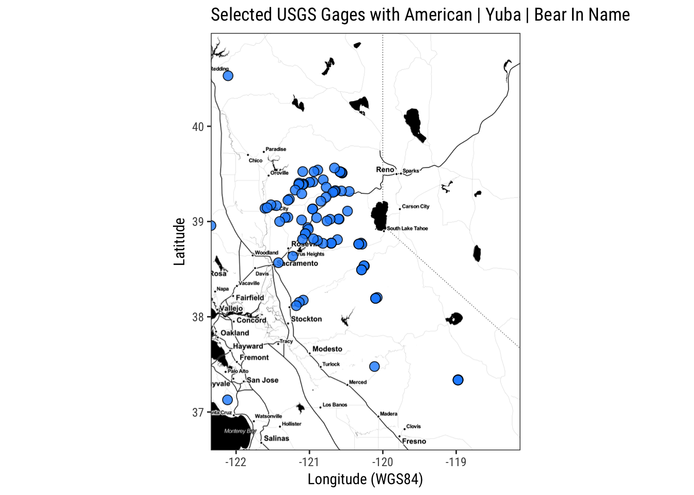

kml Fileskml files are the unzipped versions of kmz files. You can use the sf package to read kml’s. You’ll want to unzip with any sort of zip package you have on your computer (Keka, 7zip, etc.). Data used in this example live in the github repo here.
suppressPackageStartupMessages({
library(ggplot2)
library(dplyr)
#devtools::install_github("tidyverse/ggplot2", force=TRUE)
library(sf);
library(stringi)
})
gages <- st_read("data/streamgages_06.kml") # reads kml but not kmz## Reading layer `USGS streamgages ' from data source `/Users/ryanpeek/Documents/github/teaching/mapping_in_R/data/streamgages_06.kml' using driver `KML'
## Simple feature collection with 2239 features and 2 fields
## geometry type: POINT
## dimension: XYZ
## bbox: xmin: -124.2942 ymin: 32.55172 xmax: -114.1402 ymax: 42.00429
## epsg (SRID): 4326
## proj4string: +proj=longlat +datum=WGS84 +no_defsggmap backgroundNow we can add a different html background if we would like, or plot as a leaflet map with the mapview package.
# now with background
library(ggmap)
location<-c(mean(st_coordinates(gages_AMER)[,1]),
mean(st_coordinates(gages_AMER)[,2]))
map1 <- get_map(location=location,crop = F,
source = "stamen", maptype = "watercolor",
zoom=8)## Map from URL : http://maps.googleapis.com/maps/api/staticmap?center=38.591282,-120.52633&zoom=8&size=640x640&scale=2&maptype=terrain&sensor=false## Map from URL : http://tile.stamen.com/watercolor/8/41/96.jpg## Map from URL : http://tile.stamen.com/watercolor/8/42/96.jpg## Map from URL : http://tile.stamen.com/watercolor/8/43/96.jpg## Map from URL : http://tile.stamen.com/watercolor/8/41/97.jpg## Map from URL : http://tile.stamen.com/watercolor/8/42/97.jpg## Map from URL : http://tile.stamen.com/watercolor/8/43/97.jpg## Map from URL : http://tile.stamen.com/watercolor/8/41/98.jpg## Map from URL : http://tile.stamen.com/watercolor/8/42/98.jpg## Map from URL : http://tile.stamen.com/watercolor/8/43/98.jpg## Map from URL : http://tile.stamen.com/watercolor/8/41/99.jpg## Map from URL : http://tile.stamen.com/watercolor/8/42/99.jpg## Map from URL : http://tile.stamen.com/watercolor/8/43/99.jpgbg1 <-ggmap(map1)
map2 <- get_map(location=location, crop = F,
source = "stamen", maptype = "toner",
zoom=8)## Map from URL : http://maps.googleapis.com/maps/api/staticmap?center=38.591282,-120.52633&zoom=8&size=640x640&scale=2&maptype=terrain&sensor=false## Map from URL : http://tile.stamen.com/toner/8/41/96.png## Warning in file.remove(index[[url]]): cannot remove file
## 'beb0c4e5ec18619a174afce9a8d91516.rds', reason 'No such file or directory'## Map from URL : http://tile.stamen.com/toner/8/42/96.png## Warning in file.remove(index[[url]]): cannot remove file
## 'd0c862e5b54ca6ad55162b0fe0b6ff82.rds', reason 'No such file or directory'## Map from URL : http://tile.stamen.com/toner/8/43/96.png## Warning in file.remove(index[[url]]): cannot remove file
## '0f61e8a3cdb3242faebb79423fe38392.rds', reason 'No such file or directory'## Map from URL : http://tile.stamen.com/toner/8/41/97.png## Warning in file.remove(index[[url]]): cannot remove file
## '7d7bae258e4e9d83005ea6d68b49d9c0.rds', reason 'No such file or directory'## Map from URL : http://tile.stamen.com/toner/8/42/97.png## Warning in file.remove(index[[url]]): cannot remove file
## '587a5a9fe5bb83132d55b0c117c27c9b.rds', reason 'No such file or directory'## Map from URL : http://tile.stamen.com/toner/8/43/97.png## Warning in file.remove(index[[url]]): cannot remove file
## 'fbb61a68ec6b492105a4b71a7a33bb9b.rds', reason 'No such file or directory'## Map from URL : http://tile.stamen.com/toner/8/41/98.png## Warning in file.remove(index[[url]]): cannot remove file
## 'c1d61e975cfc662c69b208e709255804.rds', reason 'No such file or directory'## Map from URL : http://tile.stamen.com/toner/8/42/98.png## Warning in file.remove(index[[url]]): cannot remove file
## 'a5d52799ae627ddf71a7e7646330d176.rds', reason 'No such file or directory'## Map from URL : http://tile.stamen.com/toner/8/43/98.png## Warning in file.remove(index[[url]]): cannot remove file
## '0c0db1982d8ec1e0a188c24e5a33ccb9.rds', reason 'No such file or directory'## Map from URL : http://tile.stamen.com/toner/8/41/99.png## Map from URL : http://tile.stamen.com/toner/8/42/99.png## Map from URL : http://tile.stamen.com/toner/8/43/99.pngbg2 <-ggmap(map2)
# water color version
bg2 +
scale_color_viridis_d() +
labs(x="Longitude (WGS84)", y="Latitude",
title="Selected USGS Gages with American | Yuba | Bear In Name") +
theme_bw(base_family = "Roboto Condensed") +
geom_point(data=gages_AMER,
aes(x = st_coordinates(gages_AMER)[,1],
y = st_coordinates(gages_AMER)[,2]),
fill="dodgerblue", alpha=0.8, pch=21, size=3)+
coord_fixed(ratio=1.3)## Coordinate system already present. Adding new coordinate system, which will replace the existing one.## Warning: Removed 10 rows containing missing values (geom_point).